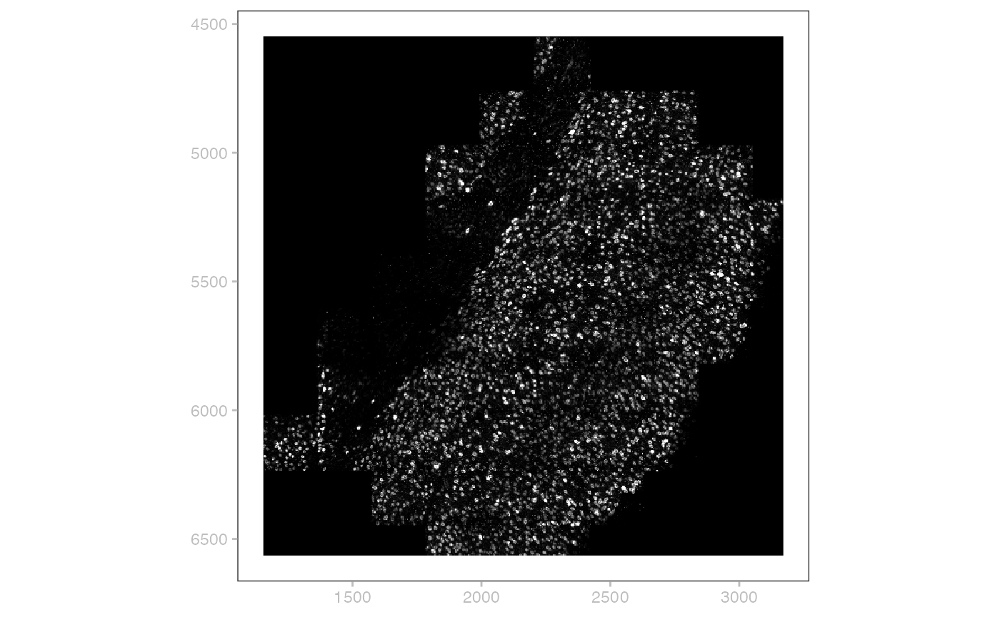
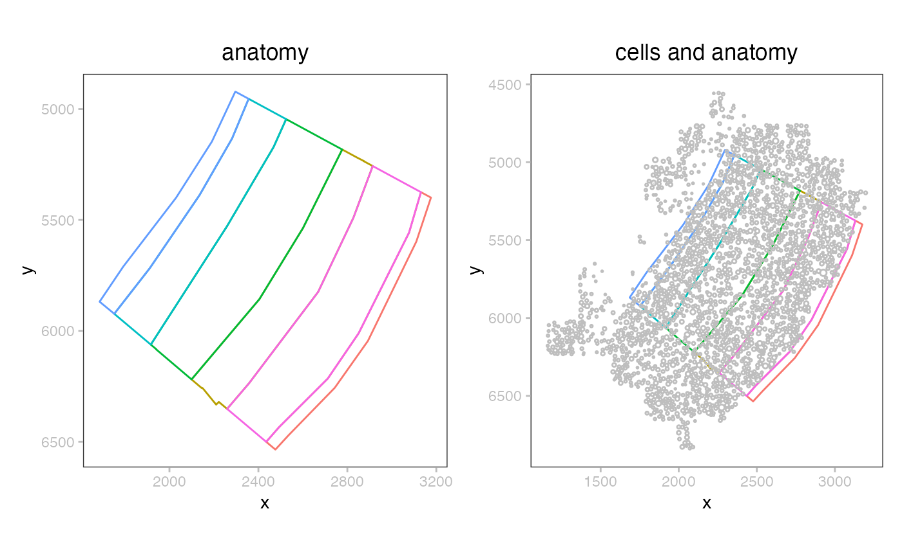
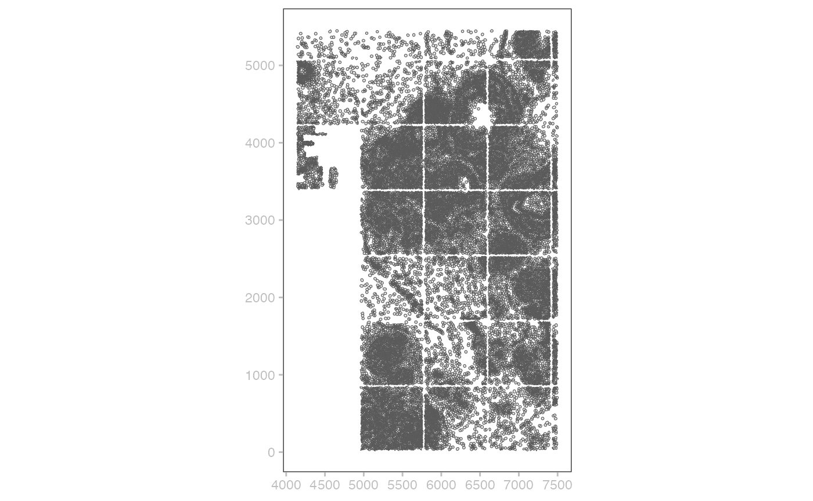

Zarr-based spatial transcriptomics overview
Vincent J. Carey, stvjc at channing.harvard.edu
December 10, 2024
Source:vignettes/ZarrBasedSpatialTranscriptomics.Rmd
ZarrBasedSpatialTranscriptomics.RmdIntroduction
The Open Microscopy Environment “next-generation file format” initiative (OME-NGFF) has driven substantial software development in the scverse community. This vignette describes R-based software being developed to convey spatial omics solutions to investigators using NHGRI AnVIL.
Package facts
We will use two packages being developed by a team assembled for the 2024 hackathon in Basel, led by Helena Crowell.
library(SpatialData)
library(SpatialData.plot)
library(SpatialData.data)
library(patchwork)
library(ggplot2)
library(sf)
utils::data(demo_spatialdata)
DT::datatable(demo_spatialdata)Example 1: MERFISH
Example datasets are retrieved from cloud storage as needed and cached locally. For persistent use, a target parameter can be used, which will be populated with a Zarr store.
Acquisition and persistence; folder layout
mb = MouseBrainMERFISH()
mb## class: SpatialData
## - images(1):
## - rasterized (1,522,575)
## - labels(0):
## - points(1):
## - single_molecule (3714642)
## - shapes(2):
## - anatomical (6,polygon)
## - cells (2389,circle)
## - tables(1):
## - table (268,2389)
## coordinate systems:
## - global(4): rasterized anatomical cells single_moleculeTo continue working with the MERFISH archive, set the target parameter in MouseBrainMERFISH and then use readSpatialData.
Exhibiting the image
By default, the raw image is displayed at the coarsest level of resolution.
plotSpatialData() + plotImage(mb)## Scale for y is already present.
## Adding another scale for y, which will replace the existing scale.
Cells and their coordinates
In this assay, cells are described by a circle with given center and radius.
## Simple feature collection with 2389 features and 2 fields
## Geometry type: POINT
## Dimension: XY
## Bounding box: xmin: 1161.113 ymin: 4556.133 xmax: 3196.913 ymax: 6837.183
## CRS: NA
## First 10 features:
## radius cell_id geometry
## 1 7.358295 0 POINT (1161.113 6178.383)
## 2 8.108447 1 POINT (1162.913 6113.133)
## 3 7.667168 2 POINT (1168.313 6046.083)
## 4 5.276907 3 POINT (1163.813 6202.683)
## 5 7.035876 4 POINT (1166.963 6083.883)
## 6 8.617153 5 POINT (1171.463 6151.383)
## 7 8.281488 6 POINT (1173.263 6206.733)
## 8 8.060609 7 POINT (1184.063 6221.583)
## 9 10.104508 8 POINT (1193.963 6186.483)
## 10 7.866349 9 POINT (1197.113 6076.683)Coordinates for different components of the spatial data can require transformation to be located or viewed together.
plotCoordGraph(CTgraph(mb))Here we see that there would need to be a transformation from the rasterized image shown with plotImage, to bring it to the global coordinates shared by all other modes.
Visualizing the cells and annotation
There are two types of shape recorded in the data: a partitioning of the plane into anatomical layers, and (circular) segmentation of individual cells.
plotSpatialData() + plotShape(mb) + ggtitle("anatomy") |
plotSpatialData() + plotShape(mb) +
plotShape(mb,2, c="gray") + ggtitle("cells and anatomy")
Transcripts and their locations
## Simple feature collection with 2389 features and 2 fields
## Geometry type: POINT
## Dimension: XY
## Bounding box: xmin: 1161.113 ymin: 4556.133 xmax: 3196.913 ymax: 6837.183
## CRS: NA
## First 10 features:
## radius cell_id geometry
## 1 7.358295 0 POINT (1161.113 6178.383)
## 2 8.108447 1 POINT (1162.913 6113.133)
## 3 7.667168 2 POINT (1168.313 6046.083)
## 4 5.276907 3 POINT (1163.813 6202.683)
## 5 7.035876 4 POINT (1166.963 6083.883)
## 6 8.617153 5 POINT (1171.463 6151.383)
## 7 8.281488 6 POINT (1173.263 6206.733)
## 8 8.060609 7 POINT (1184.063 6221.583)
## 9 10.104508 8 POINT (1193.963 6186.483)
## 10 7.866349 9 POINT (1197.113 6076.683)Quantifications of transcript abundance in cells
This experiment has measurements for 268 molecular features.
SpatialData::table(mb)## class: SingleCellExperiment
## dim: 268 2389
## metadata(0):
## assays(1): X
## rownames(268): 1700022I11Rik 1810046K07Rik ... Wnt7b Zfp804b
## rowData names(0):
## colnames(2389): 0 1 ... 2397 2398
## colData names(2): cell_id region
## reducedDimNames(0):
## mainExpName: NULL
## altExpNames(0):Example 2: Breast cancer Xenium
Acquisition
jbr1 = JanesickBreastXeniumRep1()
jbr1## class: SpatialData
## - images(2):
## - morphology_focus (1,25778,35416)
## - morphology_mip (1,25778,35416)
## - labels(0):
## - points(1):
## - transcripts (42638083)
## - shapes(2):
## - cell_boundaries (167780,circle)
## - cell_circles (167780,circle)
## - tables(1):
## - table (313,167780)
## coordinate systems:
## - global(5): morphology_focus morphology_mip cell_boundaries
## cell_circles transcripts
## - aligned(5): morphology_focus morphology_mip cell_boundaries
## cell_circles transcriptsCells and their coordinates
## Simple feature collection with 167780 features and 1 field
## Geometry type: POLYGON
## Dimension: XY
## Bounding box: xmin: 0 ymin: 0 xmax: 7525.688 ymax: 5477.612
## CRS: NA
## First 10 features:
## cell_id geometry
## 1 1 POLYGON ((849.7875 322.3625...
## 2 2 POLYGON ((817.0625 321.0875...
## 3 3 POLYGON ((849.7875 329.1625...
## 4 4 POLYGON ((823.225 330.8625,...
## 5 5 POLYGON ((840.65 324.7, 835...
## 6 6 POLYGON ((847.2375 332.775,...
## 7 7 POLYGON ((836.4 333.2, 834....
## 8 8 POLYGON ((828.1125 335.325,...
## 9 9 POLYGON ((844.6875 339.575,...
## 10 10 POLYGON ((840.0125 338.9375...The simple features representation lends itself to rapid sketching of cell boundaries:
cc = shape(jbr1)@data |> st_as_sf() |> tail(50000)
plotSpatialData() + geom_sf(data=cc)## Coordinate system already present. Adding new coordinate system, which will
## replace the existing one.